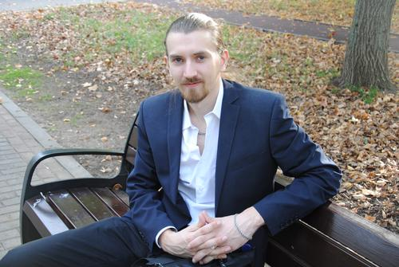

Резюме
О себе
Имею более 11 лет опыта работы в IT сфере, поддержка пользователей. На текущем месте работы занимаюсь анализом обращений, поиском багов, сортировкой предложений по улучшения продукта компании.
Летом 2022 года проходил сжатый онлайн курс на профессию "Тестировщик".
С осени 2023 года учусь на Нетологии.
Фото
